การเขียนโปรแกรม ESP32-C6 ด้วย Arduino-ESP32 Core#
- แนะนำชิป Espressif ESP32-C6
- โค้ดตัวอย่างที่ 1: การตรวจสอบคุณสมบัติเกี่ยวกับฮาร์ดแวร์และซอฟต์แวร์
- โค้ดตัวอย่างที่ 2: การตรวจสอบสถานะลอจิกของปุ่มกดและเปลี่ยนสถานะลอจิกของ LED
- โค้ดตัวอย่างที่ 3: การปรับความสว่างของ LED ด้วยสัญญาณ PWM
- โค้ดตัวอย่างที่ 4: การสื่อสารด้วย I2C Master
- โค้ดตัวอย่างที่ 5: การอ่านค่าจากโมดูลเซนเซอร์ AHT2x
- โค้ดตัวอย่างที่ 6: การกำหนดค่าสีของโมดูล WS2812 RGB LED
- โค้ดตัวอย่างที่ 7: การเชื่อมต่อผ่าน WiFi ไปยัง NTP Server
- โค้ดตัวอย่างที่ 8: การอ่านค่าสัญญาณแอนะล็อกด้วย ADC
- โค้ดตัวอย่างที่ 9: การอ่านค่าสัญญาณแอนะล็อกด้วยอัตราคงที่โดยใช้ ADC และ Timer
▷ แนะนำชิป Espressif ESP32-C6#
ESP32-C6 Series (released: September 22, 2022) ของบริษัท Espressif Systems เป็นชิปที่มีซีพียู 32-bit RISC-V Core และมีคุณลักษณะด้านฮาร์ดแวร์ (ESP32-C6 Series Datasheet) เช่น
- CPU Cores:
- High-performance (HP Core): 32-bit RISC-V CPU, 160 MHz
- Low-power (LP Core): 32-bit RISC-V CPU (ultra-low power consumption), 20MHz
- LP Peripherals: LP IO, LP UART, LP I2C, ...
- Storage:
- L1 cache: 32 KB
- ROM: 320 KB
- SRAM: 512 KB (HP Core), 16KB (LP Core)
- eFuse: 4 KBits
- Packages (5×5 mm) / GPIOs:
- QFN40 / 30 GPIOs
- QFN32 / 22 GPIOs
- I/O Drive Strength (Default): 20mA
- Connectivity:
- 2.4 GHz Wi-Fi 6 (IEEE 802.11b/g/n & 802.11ax)
- 2.4 GHz Bluetooth 5 (LE) radio
- 2.4 GHz IEEE 802.15.4-2015 (ZigBee 3.0 / Thread 1.3 / Matter compliant)
- Built-in USB Serial/JTAG Controller (no USB-OTG)
เอกสารของผู้ผลิต
จุดเด่นที่น่าสนใจของชิป ESP32-C6 คือ การรองรับรูปแบบการสื่อสารไร้สายแบบหลายโพรโตคอล ด้วยคลื่นความถี่ 2.4GHz ได้แก่ BLE / ZigBee / Thread / Matter ซึ่งเหมาะสำหรับการใช้งานด้าน IoT / Smart Home
หากต้องการจะเขียนโปรแกรมสำหรับ LP RISC-V Core จะต้องใช้ ESP-IDF และสามารถศึกษาขั้นตอนการเขียนโปรแกรมได้จาก "ULP LP-Core Coprocessor Programming"
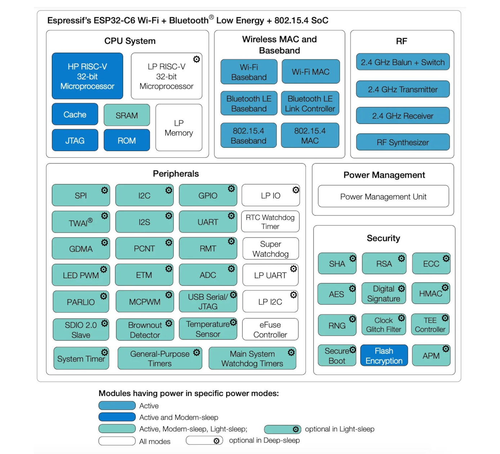
รูป: ESP32-C6 Block Diagram
บทความนี้นำเสนอตัวอย่างการเขียนโค้ด Arduino Sketch และการทดลองใช้งาน ESP32-C6 ในเบื้องต้น โดยใช้ Arduino-ESP32 Core v3.0.0+ (Released: November 2023) ซึ่งใช้ ESP-IDF v5.1 เป็นพื้นฐานในการพัฒนา และถือว่าเป็นการอัปเกรดเวอร์ชันครั้งสำคัญจาก Arduino ESP32 Core v2.0.0 (Released: September 2021) และรองรับการใช้งานชิปรุ่น ESP32-C6 และ ESP32-H2 จากเดิมที่มีเพียง ESP32 / ESP32-S2 / ESP32-S3 และ ESP32-C3
ผู้ใช้สามารถดูรายละเอียดเพิ่มเติมเกี่ยวกับการพัฒนาและการเปลี่ยนแปลงเวอร์ชันของ Arduino-ESP32 ในอดีตจนถึงปัจจุบันได้จาก https://github.com/espressif/arduino-esp32/releases
ในส่วนของซอฟต์แวร์ จะใช้งาน Arduino IDE v2.x สำหรับการเขียนโค้ด ดังนั้นจะต้องติดตั้ง Arduino ESP32 เวอร์ชันล่าสุด โดยระบุ URL สำหรับ Arduino Board Manager ดังนี้
https://espressif.github.io/arduino-esp32/package_esp32_dev_index.json
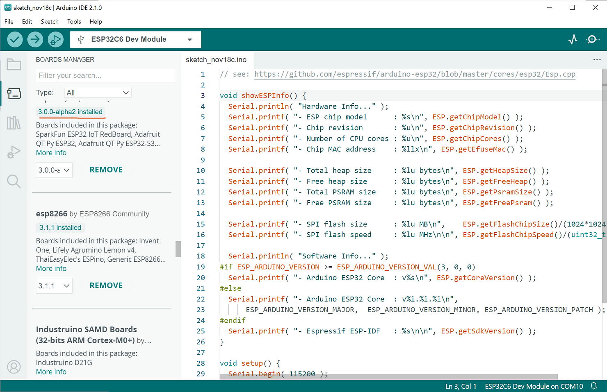
รูป: การติดตั้ง Arduino-ESP32 Core v3.0.0+ ใน Arduino IDE
ในส่วนของฮาร์ดแวร์ บอร์ด ESP32-C6 สำหรับการนำมาทดลองใช้งาน เช่น
- Espressif ESP32-C6 DevKitM-1 (with ESP32-C6-MINI-1 module)
- Espressif ESP32-C6 DevKitC-1 (with ESP32-C6-WROOM-1 module)
- WeAct Studio ESP32-C6-A Development Board
- Waveshare ESP32-C6-DEV-KIT-N8
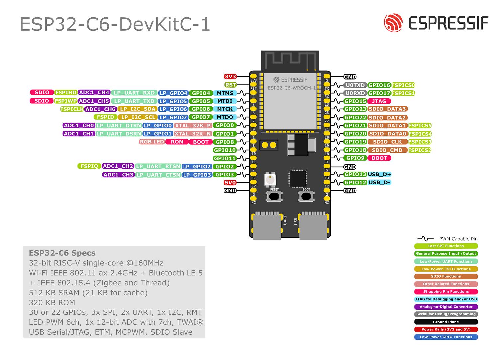
รูป: แผนผังของบอร์ด ESP32-C6 DevKitC-1 (Schematic)
{kind=link}
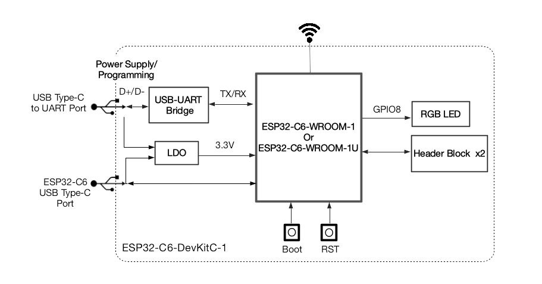
รูป: แผนผังแสดงองค์ประกอบสำคัญของบอร์ด ESP32-C6 DevKitC-1
จากแผนผังของบอร์ด ESP32-C6 DevKitC-1 (N4/N8) จะเห็นได้ว่า มีโมดูล ESP32-C6-WROOM-1 และในส่วนการเชื่อมต่อกับคอมพิวเตอร์ของผู้ใช้ มีคอนเนกเตอร์ USB Type-C แบ่งเป็น 2 ส่วน คือ
- USB (ต่อตรงสัญญาณ USB D+/D- ที่ขา GPIO13 และ GPIO12 ตามลำดับ) ใช้สำหรับการทำงานของ USB-to-Serial & JTAG-over-USB
- UART0 (ต่อสัญญาณจากขา U0TXD และ U0RXD ไปยังไอซี CP2102N: USB-to-UART Bridge) และตรงกับขา GPIO16 และ GPIO17 ตามลำดับ
การอัปโหลดไฟล์เฟิร์มแวร์ ผ่านทาง USB จึงมีสองทางเลือก
- เชื่อมต่อผ่าน USB-to-Serial Bridge หรือ แต่เลือกใช้วิธีนี้ ให้เลือก USB CDC On Boot เป็น Disabled
- เชื่อมต่อผ่าน Native USB Port ของ ESP32-C6 แต่เลือกใช้วิธีนี้ ให้เลือก USB CDC On Boot เป็น Enabled
ถ้าต้องการเข้าโหมด USB Bootloader เพื่ออัปโหลดไฟล์เฟิร์มแวร์ไปยังบอร์ด ให้กดปุ่ม BOOT ค้างไว้ แล้วกดปุ่ม Reset แล้วปล่อย
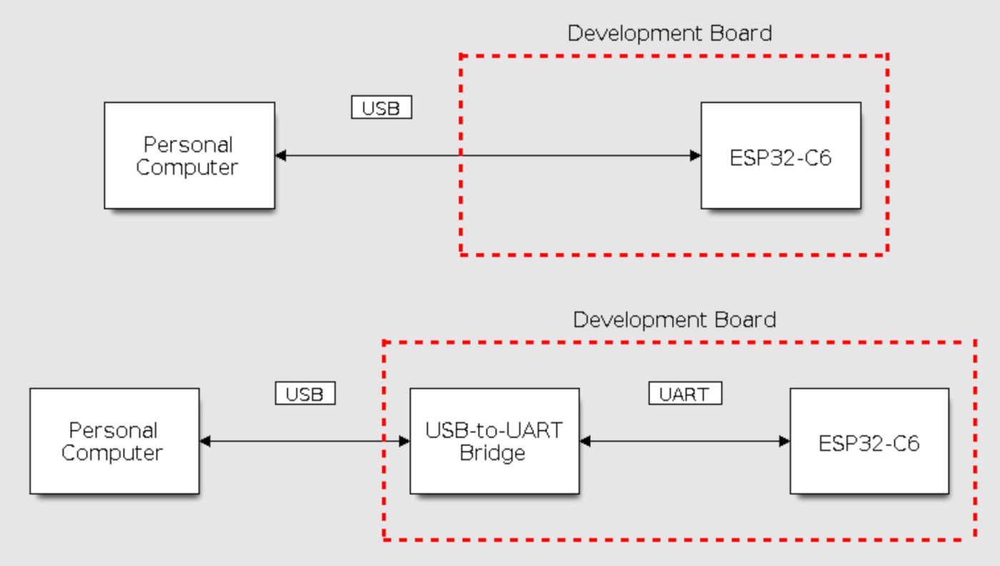
รูป: การเชื่อมต่อกับบอร์ดด้วย USB (Source: Espressif)
บอร์ดมีปุ่ม RESET (ขา CHIP_PU) และปุ่ม BOOT (ขา GPIO9) และมีวงจร WS2812 RGB LED (ขา GPIO8) ถ้าต้องการใช้ขาอินพุตแบบแอนะล็อก ก็มีให้เลือกใช้ 7 ช่องสัญญาณ ได้แก่ ADC1_CH0..CH6 (ตรงกับขา GPIO0..GPIO6 ตามลำดับ)
บอร์ด WeAct Studio ESP32-C6-A มีลักษณะคล้ายกับ ESP32-C6 DevKitC-1 ของบริษัท Espressif Systems
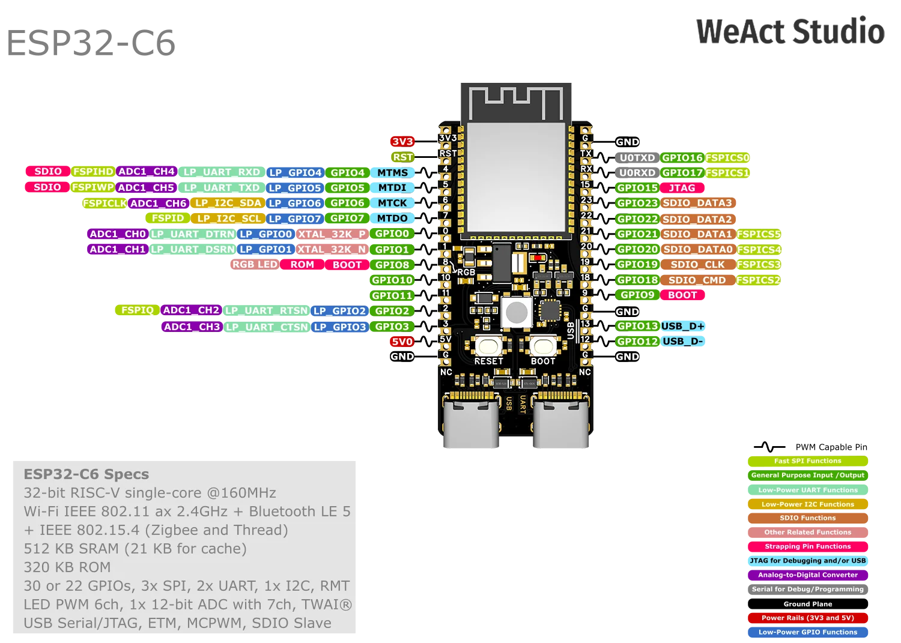
รูป: แผนผังแสดงองค์ประกอบสำคัญของบอร์ด WeAct Studio ESP32-C6-A
ในเชิงเปรียบเทียบความแตกต่าง บอร์ด ESP32-C6-DEV-KIT-N8 มีคอนเนกเตอร์ USB Type-C เพียงอันเดียว แต่มีการใช้งานชิป USB Hub เพื่อเชื่อมต่อและแชร์การใช้งาน USB ระหว่างไอซี USB-to-Serial Bridge และขาสัญญาณ USB D+/D- ของ ESP32-C6
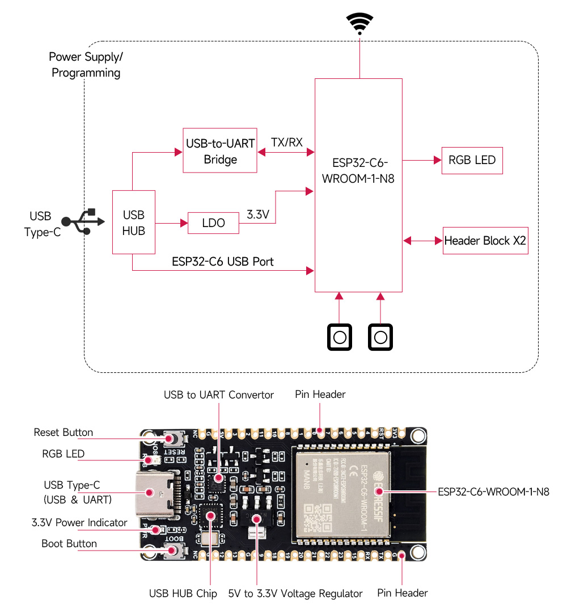
รูป: แผนผังแสดงองค์ประกอบสำคัญของบอร์ด ESP32-C6-DEV-KIT-N8
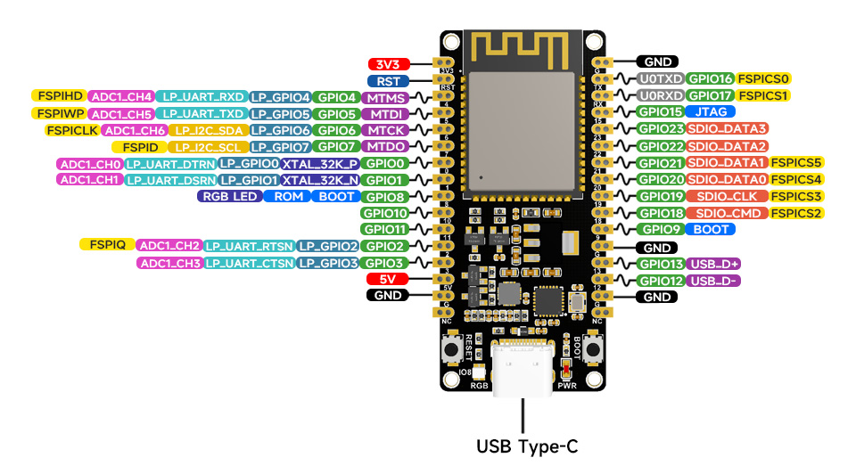
รูป: แผนผังของบอร์ด ESP32-C6-DEV-KIT-N8
▷ โค้ดตัวอย่างที่ 1: การตรวจสอบคุณสมบัติเกี่ยวกับฮาร์ดแวร์และซอฟต์แวร์#
โค้ดตัวอย่างแรก สาธิตการเขียนโค้ดโดยใช้
Arduino-ESP32 Core สำหรับบอร์ด ESP32-C6 และสาธิตการใช้คำสั่งของคลาส
ESP
เพื่อแสดงข้อมูลเกี่ยวกับฮาร์ดแวร์และซอฟต์แวร์ เช่น
ESP.getCoreVersion()ข้อความระบุเวอร์ชันของ Arduino ESP32 CoreESP.getSdkVersion()ข้อความระบุเวอร์ชันของ ESP-IDFESP.getChipModel()ข้อความระบุโมเดลหรือชื่อรุ่นของ ESP32 Series
void showESPInfo() {
Serial.println( "Hardware Info..." );
Serial.printf( "- ESP chip model : %s\n", ESP.getChipModel() );
Serial.printf( "- Chip revision : %u\n", ESP.getChipRevision() );
Serial.printf( "- No. of cores : %u\n", ESP.getChipCores() );
Serial.printf( "- Chip MAC address : %llx\n", ESP.getEfuseMac() );
Serial.printf( "- Total heap size : %lu bytes\n", ESP.getHeapSize() );
Serial.printf( "- Free heap size : %lu bytes\n", ESP.getFreeHeap() );
Serial.printf( "- Total PSRAM size : %lu bytes\n", ESP.getPsramSize() );
Serial.printf( "- Free PSRAM size : %lu bytes\n", ESP.getFreePsram() );
Serial.printf( "- SPI flash size : %lu MB\n", ESP.getFlashChipSize()/(1024*1024) );
Serial.printf( "- SPI flash speed : %lu MHz\n\n", ESP.getFlashChipSpeed()/(long)1e6 );
Serial.println( "Software Info..." );
#if ESP_ARDUINO_VERSION >= ESP_ARDUINO_VERSION_VAL(3, 0, 0)
Serial.printf( "- Arduino ESP32 Core : v%s\n", ESP.getCoreVersion() );
#else
Serial.printf( "- Arduino ESP32 Core : v%i.%i.%i\n",
ESP_ARDUINO_VERSION_MAJOR, ESP_ARDUINO_VERSION_MINOR, ESP_ARDUINO_VERSION_PATCH );
#endif
Serial.printf( "- Espressif ESP-IDF : %s\n\n", ESP.getSdkVersion() );
}
void setup() {
Serial.begin( 115200 );
Serial.println("\n\n\n");
}
void loop() {
showESPInfo();
delay(5000);
}
ถ้าอัปโหลดเฟิร์มแวร์แล้ว มีข้อความ waiting for download
ได้รับจากบอร์ดผ่านทาง USB-to-Serial ให้กดปุ่มรีเซตเพื่อให้โปรแกรมเริ่มต้นทำงาน
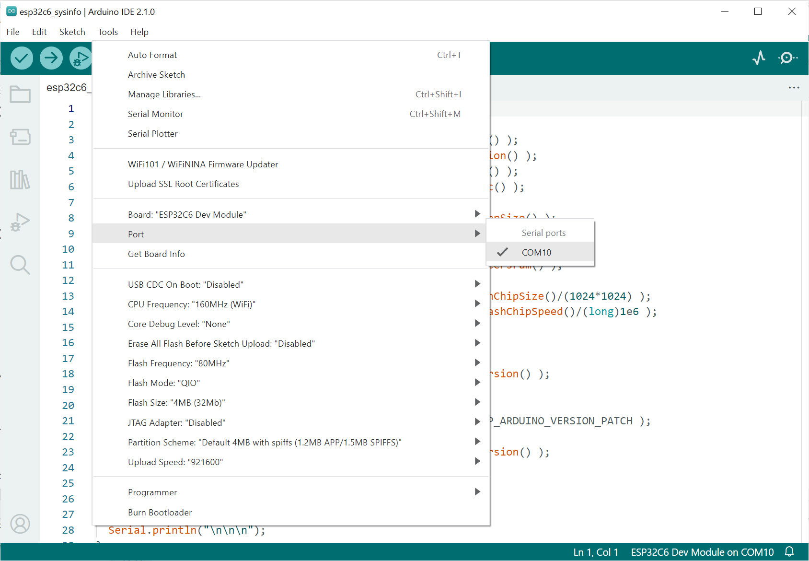
รูป: ตัวอย่างการเลือก Serial Port (เชื่อมต่อผ่าน USB-to-Serial Bridge) สำหรับอัปโหลดไฟล์เฟิริม์แวร์
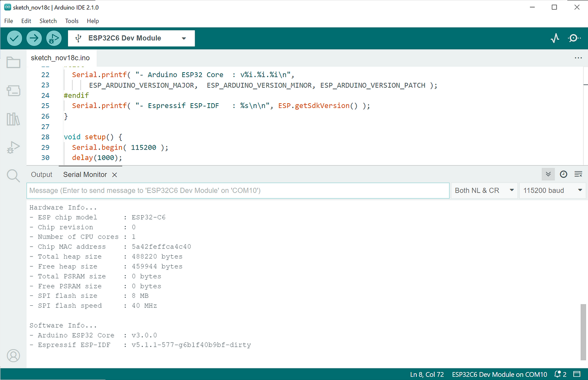
รูป: ตัวอย่างข้อความเอาต์พุต
▷ โค้ดตัวอย่างที่ 2: การตรวจสอบสถานะลอจิกของปุ่มกดและเปลี่ยนสถานะลอจิกของ LED#
ตัวอย่างถัดไปเป็นการตรวจสอบสถานะลอจิกของปุ่มกด โดยจะใช้วงจรปุ่มกดและวงจร LED ที่นำมาต่อเพิ่มที่ขา GPIO ของ ESP32-C6
ในการตรวจสอบสถานะของปุ่มกด จะใช้วิธีเปิดการใช้งานอินเทอร์รัพท์ภายนอกที่ขาอินพุตสำหรับปุ่มกด ซึ่งทำงานแบบ Active-Low เมื่อพบว่า มีการกดปุ่มแล้วปล่อย จะเปลี่ยนสถานะลอจิกที่ขาเอาต์พุตสำหรับ LED หนึ่งครั้ง
// Define the pin number for the LED.
const int LED_PIN = 10;
// Define the pin number for the button.
const int BTN_PIN = 11;
// Declare a variable to store the state of the LED.
bool led_state = 0;
void setup() {
// Begin serial communication at a baud rate of 115200.
Serial.begin(115200);
// Set the LED pin as an output.
pinMode( LED_PIN, OUTPUT );
// // Set the button pin as an input with pull-up.
pinMode( BTN_PIN, INPUT_PULLUP );
// Attach an interrupt to the button pin
// that triggers on a rising edge.
// Note: The ISR is implemented as an anonymous function.
attachInterrupt( BTN_PIN, [](){
// Use a static variable to store the time of
// the last state change.
static uint32_t last_changed = 0;
// Get the current time in msec.
uint32_t now = millis();
// Check if at least 10 milliseconds have passed
// since the last state change.
if ( now - last_changed >= 10 ) {
// Toggle the state of the LED.
digitalWrite( LED_PIN, led_state ^= 1 );
}
// Update the time of the last state change
last_changed = now;
}, RISING );
}
void loop() {
}
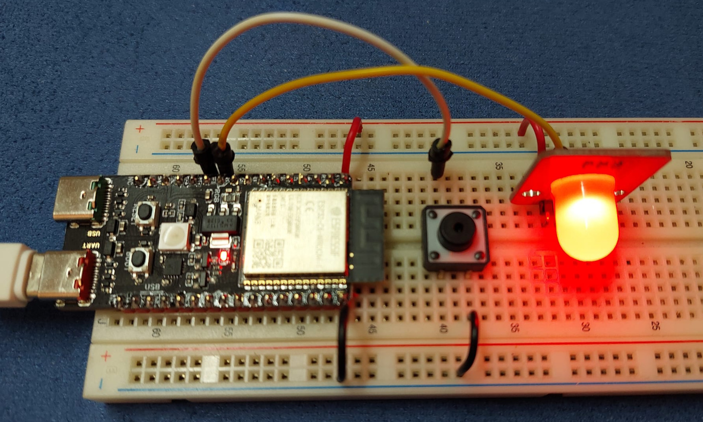
รูป: การต่อวงจร Button และ LED บนเบรดบอร์ด
ถ้าจะลองใช้ FreeRTOS เพื่อให้มีการสื่อสารจากฟังก์ชัน ISR
(Interrupt Service Routine) ไปยังการทาสก์หลัก (Main Task)
ซึ่งทำงานในฟังก์ชัน loop() เมื่อเกิดอินพุตจากการกดปุ่ม ก็มีแนวทางดังนี้
const int LED_PIN = 10;
const int BTN_PIN = 11;
bool led_state = 0;
TaskHandle_t mainTaskHandle = NULL;
void notifyChange() {
BaseType_t xHigherPriorityTaskWoken = pdFALSE;
// Notify the main task.
vTaskNotifyGiveFromISR(mainTaskHandle, &xHigherPriorityTaskWoken);
if (xHigherPriorityTaskWoken == pdTRUE) {
portYIELD_FROM_ISR();
}
}
void setup() {
Serial.begin(115200);
pinMode(LED_PIN, OUTPUT);
pinMode(BTN_PIN, INPUT_PULLUP);
// Get the handle of the main task.
mainTaskHandle = xTaskGetCurrentTaskHandle();
// Attach the interrupt to the button pin
attachInterrupt( BTN_PIN, [](){
static uint32_t last_changed = 0;
uint32_t now = millis();
if ( now - last_changed >= 10 ) {
// Notify the main task.
notifyChange();
}
last_changed = now;
}, RISING);
}
void loop() {
// A static variable used to count the button clicks.
static uint32_t clicks = 0;
// Wait for task notification from the ISR with timeout.
if ( ulTaskNotifyTake(pdTRUE, pdMS_TO_TICKS(10))==pdTRUE) {
// Toggle the LED state.
digitalWrite(LED_PIN, led_state ^= 1);
Serial.printf("LED state: %d, clicks: %lu\n",
led_state, ++clicks);
}
}
การสื่อสารระหว่าง ISR และทาสก์หลัก ยังมีวิธีอื่นอีกเมื่อใช้งาน FreeRTOS เช่น การใช้ Queue ตามตัวอย่างต่อไปนี้
const int LED_PIN = 10;
const int BTN_PIN = 11;
bool led_state = 0;
TaskHandle_t mainTaskHandle = NULL;
QueueHandle_t eventQueue;
void notifyChange() {
BaseType_t xHigherPriorityTaskWoken = pdFALSE;
// Notify the main task
xQueueSendToBackFromISR(eventQueue, &led_state,
&xHigherPriorityTaskWoken);
if (xHigherPriorityTaskWoken == pdTRUE) {
portYIELD_FROM_ISR();
}
}
void setup() {
Serial.begin(115200);
pinMode(LED_PIN, OUTPUT);
pinMode(BTN_PIN, INPUT_PULLUP);
// Get the handle of the main task.
mainTaskHandle = xTaskGetCurrentTaskHandle();
// Create an event queue with a capacity of 1.
eventQueue = xQueueCreate(1, sizeof(bool));
// Attach the interrupt to the button pin.
attachInterrupt( BTN_PIN, []() {
static uint32_t last_changed = 0;
uint32_t now = millis();
if ( now - last_changed >= 10 ) {
// Notify the main task.
notifyChange();
}
last_changed = now;
}, RISING);
}
void loop() {
// A static variable used to count the button clicks.
static uint32_t clicks = 0;
// Wait for an event in the event queue (with a timeout).
bool event;
if (xQueueReceive(eventQueue,&event,pdMS_TO_TICKS(10))==pdTRUE){
// Toggle the LED state.
digitalWrite(LED_PIN, event ^= 1);
Serial.printf("LED state: %d, clicks: %lu\n",
event, ++clicks);
}
}
▷ โค้ดตัวอย่างที่ 3: การปรับความสว่างของ LED ด้วยสัญญาณ PWM#
ตัวอย่างถัดไปสาธิตการใช้คำสั่งเพื่อปรับความสว่างของ LED โดยการสร้างสัญญาณ PWM ที่สามารถปรับค่า Duty Cycle ของสัญญาณได้ และใช้วงจร LEDC / Timer ภายในชิป ESP32C6 เพื่อสร้างสัญญาณดังกล่าว คำสั่งที่เกี่ยวข้องได้แก่
analogWriteResolution(uint8_t pin, uint8_t resolution)analogWriteFrequency(uint8_t pin, uint32_t freq)analogWrite(uint8_t pin, int value)
ในโค้ดตัวอย่างนี้ ได้กำหนดค่าความถี่ของสัญญาณ PWM ไว้เท่ากับ 1000Hz และความละเอียดในการกำหนดค่าให้สัญญาณ PWM ไว้ที่ 8 บิต (สูงสุด)
const uint8_t LED_PIN = 10;
const uint8_t PWM_BITS = 8;
const uint32_t PWM_MAX_VALUE = ((1<<PWM_BITS)-1);
const uint32_t PWM_FREQ = 1000;
void setup() {
Serial.begin(115200);
Serial.println("PWM LED Dimming");
pinMode(LED_PIN, OUTPUT);
analogWriteResolution( LED_PIN, PWM_BITS );
analogWriteFrequency( LED_PIN, PWM_FREQ /*Hz*/ );
analogWrite( LED_PIN, 0 );
}
void loop() {
int value;
for (int i=0; i < (2*PWM_MAX_VALUE+1); i++){
value = (i >= PWM_MAX_VALUE) ? (2*PWM_MAX_VALUE-i) : i;
// Write the new PWM value.
analogWrite( LED_PIN, value );
Serial.printf( "PWM:%d\n", value );
delay(8);
}
}
การสร้างสัญญาณ PWM ถ้าไม่ใช้คำสั่ง analogWrite() ตามรูปแบบของ Arduino API
ก็มีคำสั่งอื่นให้ใช้งานได้เช่นกัน คำสั่งที่เกี่ยวข้องได้แก่
ledcAttach(uint8_t pin, uint32_t freq, uint8_t resolution)ledcWrite(uint8_t pin, uint32_t duty)ledcRead(uint8_t pin)
ในโค้ดตัวอย่างนี้ ได้กำหนดค่าความถี่ของสัญญาณ PWM ไว้เท่ากับ 1000Hz และความละเอียดในการกำหนดค่าให้สัญญาณ PWM ไว้ที่ 10 บิต
const uint8_t LED_PIN = 10;
const uint8_t PWM_BITS = 10;
const uint32_t PWM_MAX_VALUE = ((1<<PWM_BITS)-1);
const uint32_t PWM_FREQ = 1000;
void initLEDC(void) {
if (!ledcAttach(LED_PIN, PWM_FREQ, PWM_BITS)) {
Serial.println( "LEDC initialization failed!" );
} else {
ledcWrite( LED_PIN, 0 );
}
}
void setup() {
Serial.begin(115200);
Serial.println("PWM LED Dimming");
pinMode(LED_PIN, OUTPUT);
initLEDC();
}
void loop() {
int value;
for ( int i=0; i < (2*PWM_MAX_VALUE+1); i++ ) {
value = (i >= PWM_MAX_VALUE) ? (2*PWM_MAX_VALUE-i) : i;
// Write the new PWM value.
ledcWrite( LED_PIN, value );
delay(2);
Serial.printf( "PWM:%d (%d) \n", value,
(int)ledcRead(LED_PIN) );
}
}
ถ้าต้องการลองใช้คำสั่งของ ESP-IDF v5.1 ในกลุ่มคำสั่ง LEDC API เช่น
ledc_timer_config( ... )ตั้งค่าสำหรับวงจรตัวนับเพื่อใช้งานกับ LEDC ความละเอียดในการนับ (จำนวนบิต) ความถี่ และแหล่งที่มาของสัญญาณ Clockledc_channel_config( ... )ตั้งค่าเลือกช่องสัญญาณของวงจร LEDCledc_fade_func_install( ... )เปิดการใช้งานโหมด Duty Cycle Fading เพื่อให้ปรับเพิ่มหรือลดค่า Duty Cycle ได้แบบอัตโนมัติledc_cb_register( ... )กำหนดฟังก์ชัน Callback เมื่อจบการทำงานของ Fading Functionledc_set_fade_with_time( ... )กำหนดระยะเวลาในการทำงานของ Fading Functionledc_fade_start( ... )เริ่มต้นการทำงานของ Fading Functionledc_set_duty( ... )กำหนดค่า PWM Duty Cycleledc_update_duty( ... )อัปเดตสัญญาณ PWMledc_get_duty( ... )อ่านค่าของ PWM Duty Cycle
ก็มีตัวอย่างดังนี้
#include "driver/ledc.h"
#include "hal/ledc_types.h"
#define LEDC_GPIO (10)
#define LEDC_TIMER (LEDC_TIMER_1)
#define LEDC_MODE (LEDC_LOW_SPEED_MODE)
#define LEDC_CHANNEL (LEDC_CHANNEL_2)
#define PWM_BITS (LEDC_TIMER_10_BIT)
#define PWM_MAX_VALUE ((1<<PWM_BITS)-1)
#define PWM_FREQ (1000)
// This callback function will be called
// when fade operation has ended.
static IRAM_ATTR bool cb_ledc_fade_end_event(
const ledc_cb_param_t *param, void *user_arg )
{
if (param->event == LEDC_FADE_END_EVT) {
// Handle the event if necessary...
}
return false;
}
ledc_channel_config_t ledc_channel;
ledc_channel_config_t *ledc = NULL;
void initLEDC(void) {
ledc_timer_config_t _ledc_timer = {
.speed_mode = LEDC_MODE, // low-speed timer mode
.duty_resolution = PWM_BITS, // resolution of PWM duty
.timer_num = LEDC_TIMER, // timer index
.freq_hz = 1000, // PWM frequency in Hz
.clk_cfg = LEDC_AUTO_CLK, // Auto select the source clk
};
// Set configuration of timer0 for high speed channels
ledc_timer_config(&_ledc_timer);
ledc_channel_config_t _ledc_channel = {
.gpio_num = LEDC_GPIO,
.speed_mode = LEDC_MODE,
.channel = LEDC_CHANNEL,
.intr_type = LEDC_INTR_FADE_END,
.timer_sel = LEDC_TIMER,
.duty = 0,
.hpoint = 0,
.flags = { .output_invert = 1 },
};
ledc_channel = _ledc_channel;
ledc_channel_config(&ledc_channel);
ledc = &ledc_channel;
// Initialize the LEDC fade service.
ledc_fade_func_install(0);
ledc_cbs_t callbacks = {
.fade_cb = cb_ledc_fade_end_event
};
ledc_cb_register( ledc->speed_mode, ledc->channel,
&callbacks, (void *)NULL );
}
void setup() {
Serial.begin(115200);
initLEDC();
}
void demo1() {
Serial.printf("LEDC: fade up to %d.\n", PWM_MAX_VALUE );
ledc_set_fade_with_time(
ledc->speed_mode, ledc->channel, PWM_MAX_VALUE, 2000
);
ledc_fade_start(
ledc->speed_mode, ledc->channel, LEDC_FADE_NO_WAIT
);
Serial.printf("LEDC: fade down to 0.\n");
ledc_set_fade_with_time(
ledc->speed_mode, ledc->channel, 0, 2000
);
ledc_fade_start(
ledc->speed_mode, ledc->channel, LEDC_FADE_NO_WAIT
);
}
void demo2(){
int value;
Serial.printf("LEDC: set the duty cycle.\n" );
for ( int i=0; i < (2*PWM_MAX_VALUE+1); i++ ) {
value = (i >= PWM_MAX_VALUE) ? (2*PWM_MAX_VALUE-i) : i;
ledc_set_duty(ledc->speed_mode, ledc->channel, value);
ledc_update_duty(ledc->speed_mode, ledc->channel);
delay(2);
value = ledc_get_duty(ledc->speed_mode, ledc->channel);
Serial.printf( "PWM:%d\n", value );
}
}
void loop() {
demo1(); delay(2000);
demo2(); delay(2000);
}
▷ โค้ดตัวอย่างที่ 4: การสื่อสารด้วย I2C Master#
ตัวอย่างถัดไป สาธิตการใช้งาน I2C ของ ESP32-C6 ในโหมด I2C Master
โดยเลือกใช้ขา GPIO6 และ GPIO7 สำหรับสัญญาณ I2C SDA และ I2C SCL ตามลำดับ
อุปกรณ์ที่นำมาต่อใช้งานคือ โมดูลเซนเซอร์ AHT2x (Temperature & Humdity Sensor)
ซึ่งมีหมายเลขแอดเดรส 0x38 โค้ดตัวอย่างสาธิตการตรวจสอบอุปกรณ์ที่เชื่อมต่อกับบัส I2C
#include "Wire.h"
#define I2C_SDA_PIN (6)
#define I2C_SCL_PIN (7)
#define INTERVAL_MSEC (4000)
void i2c_scan();
void setup() {
Serial.begin(115200);
Serial.println("\n\n\n");
// Initialize the I2C bus as master.
Wire.begin( I2C_SDA_PIN, I2C_SCL_PIN );
}
void loop() {
static uint32_t ts = 0;
uint32_t now = millis();
if ( now - ts >= INTERVAL_MSEC ) {
ts = now;
i2c_scan(); // Scan I2C slave devices.
}
}
#define LINE_SEP "------------------"
void i2c_scan() {
char sbuf[32];
int n_devices = 0;
Serial.println( "Scanning I2C bus..." );
Serial.print( " " );
for ( uint8_t col=0; col < 16; col++ ) {
sprintf( sbuf, "%3x", col );
Serial.print( sbuf );
}
Serial.println( "" );
uint8_t addr=0;
for( uint8_t row=0; row < 8; row++ ) {
sprintf( sbuf, "%02x:", row << 4 );
Serial.print( sbuf );
for ( uint8_t col=0; col < 16; col++ ) {
if ( row==0 && addr<=1 ) {
Serial.print(" ");
} else {
Wire.beginTransmission( addr );
if ( Wire.endTransmission() > 0 ) {
Serial.print( " --" );
} else {
sprintf( sbuf, " %2x", addr );
Serial.print( sbuf );
n_devices++;
}
}
addr++;
}
Serial.println( "" );
} // end for
Serial.println( LINE_SEP LINE_SEP LINE_SEP );
Serial.flush();
}
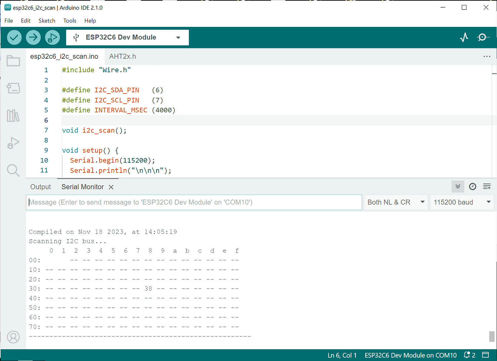
รูป: ตัวอย่างข้อความเอาต์พุต
ถ้าจะลองใช้คำสั่งตามรูปแบบของ ESP-IDF สำหรับ I2C Driver ให้ศึกษาได้จาก ESP32-C6 Peripherals API for I2C
▷ โค้ดตัวอย่างที่ 5: การอ่านค่าจากโมดูลเซนเซอร์ AHT2x#
โค้ดตัวอย่างถัดไปสาธิตการติดตั้งและใช้งานไลบรารี เพื่ออ่านค่าจากโมดูล AHT2x ที่เชื่อมต่อด้วยบัส I2C
โดยได้เลือกใช้ไลบรารี Adafruit_AHTX0
ของบริษัท Adafruit
#include <Adafruit_AHTX0.h>
#define I2C_SDA_PIN (6)
#define I2C_SCL_PIN (7)
#define INTERVAL_MSEC (2000)
// Create an instance of the Adafruit_AHTX0 class.
Adafruit_AHTX0 aht;
void setup() {
Serial.begin(115200);
Serial.println("\n\n\n");
// Initialize the I2C bus as a master.
Wire.begin( I2C_SDA_PIN, I2C_SCL_PIN, 400000 /*speed*/ );
Serial.println( "Adafruit AHT10/AHT20 library demo!" );
if (!aht.begin()) {
Serial.println("AHT2x initialization failed...");
while (1) delay(10);
}
Serial.println("Start reading the AHT2x sensor...");
}
void loop() {
static uint32_t ts;
uint32_t now = millis();
if ( now - ts >= INTERVAL_MSEC ) {
ts = now;
sensors_event_t humidity, temp;
if ( aht.getEvent(&humidity, &temp) ) {
Serial.printf( "T: %.1f deg.C, H: %.1f %%RH\n",
(float)temp.temperature,
(float)humidity.relative_humidity );
} else { // error
Serial.printf( "AHT2x reading error!\n" );
}
}
}
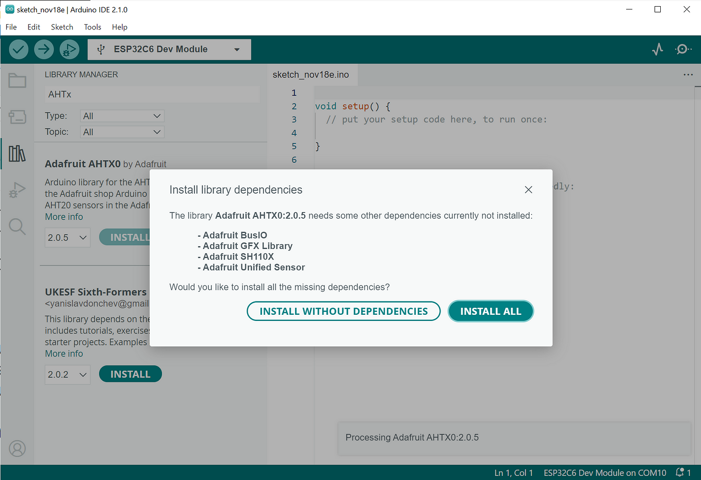
รูป: ตัวอย่างการติดตั้งไลบรารี Adafruit_AHTX0
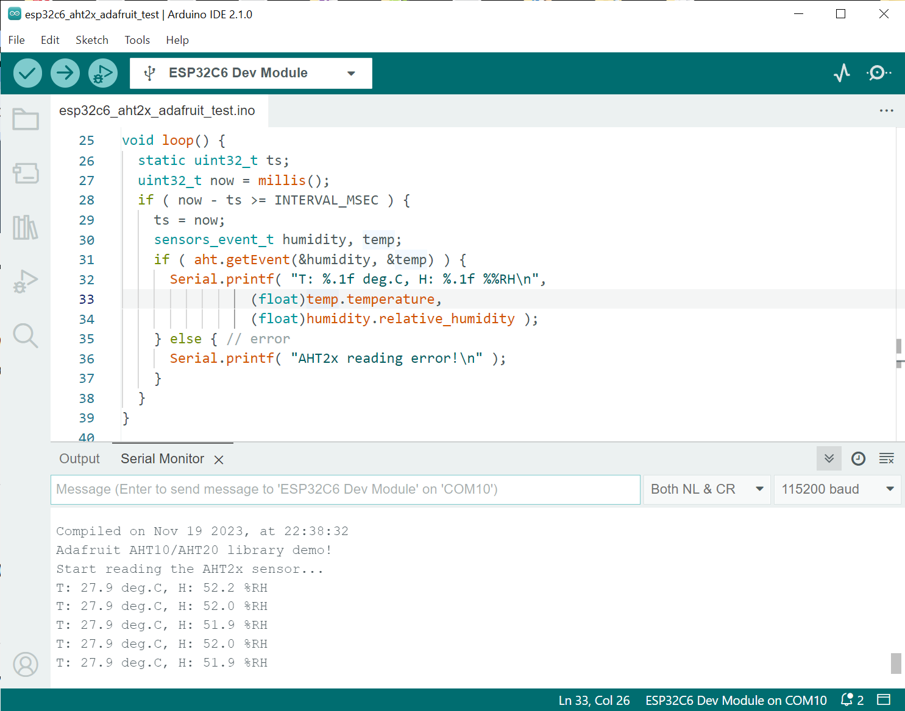
รูป: ตัวอย่างข้อความเอาต์พุต
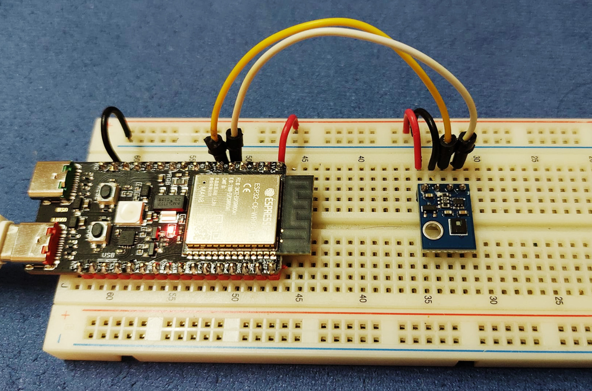
รูป: ตัวอย่างการต่อวงจรเพื่อใช้งานโมดูล AHT21
▷ โค้ดตัวอย่างที่ 6: การกำหนดค่าสีของโมดูล WS2812 RGB LED#
ตัวอย่างถัดไปสาธิตการเขียนโค้ดเพื่อกำหนดค่าสีให้กับ WS2812 RGB LED (จำนวน 1 ดวง) ที่ต่อกับขา GPIO8 และมีการใช้งานปุ่มกด BOOT (ขา GPIO9) เพื่อเปลี่ยนสีของ RGB ตามค่าสี (24 บิต) ที่ได้มีการกำหนดไว้ในอาร์เรย์
การกำหนดค่าสี 24 บิต ต่อหนึ่งพิกเซล จะต้องมีการสร้างสัญญาณพัลส์ โดยใช้วงจร RMT และความกว้างของพัลส์ช่วงที่เป็น High และ Low จะเป็นตัวกำหนดค่าบิตเป็น '0' หรือ '1' ตามพารามิเตอร์เชิงเวลาของบิตต่อไปนี้
- T0H = '0' bit high time
- T0L = '0' bit low time
- T1H = '1' bit high time
- T1L = '1' bit low time
โมเดล WS2812 และ WS2812B มีค่าพารามิเตอร์เชิงเวลาแตกต่างกัน (และมีค่าความคลาดเคลื่อนได้ในช่วงที่กำหนดไว้ตามเอกสารของผู้ผลิต)
- WS2812 (1.25us bit time, 800Kbps)
- '0' bit: T0H = 0.35us, T1L = 0.8us
- '1' bit: T1H = 0.70us, T1L = 0.6us
- WS2812b: (1.25us bit time, 800Kbps)
- '0' bit: T0H = 0.40us, T0L = 0.85us
- '1' bit: T1H = 0.80us, T1L = 0.45us
คำสั่งที่เกี่ยวข้องกับการใช้งานวงจร RMT สำหรับการสร้างสัญญาณเอาต์พุตให้กับ WS2812 ได้แก่
rmtInit()rmtWrite()
const int BTN_PIN = 9; // onboard BOOT button
const int WS2812_PIN = 8; // onboard RGB LED (single pixel)
const uint32_t NUM_RGB_BITS = 24; // 24 bits per RGB LED
rmt_data_t led_data[NUM_RGB_BITS];
const uint32_t COLORS [] = {
0x00001f, // Greeen
0x001f00, // Red
0x1f0000, // Blue
0x000000 // OFF
};
const uint32_t NUM_COLORS = sizeof(COLORS)/sizeof(uint32_t);
// FreeRTOS task handle
TaskHandle_t buttonTask;
void setColor( uint32_t color ) {
for (uint32_t i=0; i < 24; i++) {
if ( (color >> (24-i-1)) & 1 ) {
led_data[i].level0 = 1; // T1H
led_data[i].duration0 = 8;
led_data[i].level1 = 0; // T1L
led_data[i].duration1 = 4;
} else {
led_data[i].level0 = 1; // T0H
led_data[i].duration0 = 4;
led_data[i].level1 = 0; // T0L
led_data[i].duration1 = 8;
}
}
rmtWrite(WS2812_PIN, led_data, NUM_RGB_BITS, RMT_WAIT_FOR_EVER);
}
// Function to handle button press
void buttonAction(void *pvParameters) {
(void)pvParameters;
uint32_t index = NUM_COLORS-1;
while (1) {
// Wait for task notification.
ulTaskNotifyTake( pdTRUE, portMAX_DELAY );
index = (index+1) % NUM_COLORS;
Serial.printf( "Button pressed! (#%lu)\n", index );
setColor( COLORS[index] );
}
}
void setup() {
Serial.begin( 115200 );
Serial.println( "ESP32-C6 FreeRTOS Demo..." );
pinMode( BTN_PIN, INPUT_PULLUP );
// Initialize the RMT TX driver.
if (!rmtInit(WS2812_PIN, RMT_TX_MODE, RMT_MEM_NUM_BLOCKS_1, 10000000)) {
Serial.println("RMT TX initialization failed\n");
}
setColor(0x7f7f7f);
delay(500);
setColor(0);
// Attach an external interrupt to the button pin.
attachInterrupt( digitalPinToInterrupt(BTN_PIN), [] {
static uint32_t last_action = 0;
uint32_t now = millis();
if ( now - last_action >= 10 && digitalRead(BTN_PIN)==HIGH ) {
last_action = now;
// Send a task notification to the button task.
BaseType_t xHigherPriorityTaskWoken = pdFALSE;
vTaskNotifyGiveFromISR( buttonTask, &xHigherPriorityTaskWoken );
if (xHigherPriorityTaskWoken==pdTRUE) {
portYIELD_FROM_ISR();
}
}
}, RISING);
// Create the button task.
xTaskCreate(
buttonAction, // Task function
"ButtonTask", // Task name
2048, // Stack size (words)
NULL, // Task input parameter
1, // Task priority
&buttonTask // Task handle
);
}
void loop() {
}
ดูตัวอย่างการเขียนโค้ดเพื่อใช้งาน RMT ได้จาก
https://github.com/espressif/arduino-esp32/.../libraries/ESP32/examples/RMT/
▷ โค้ดตัวอย่างที่ 7: การเชื่อมต่อผ่าน WiFi ไปยัง NTP Server#
ตัวอย่างถัดไปเป็นการเขียนโค้ดเพื่อเชื่อมต่อผ่าน WiFi เพื่อให้ ESP32C6
ปรับเวลาของระบบ RTC ให้ตรงกับเวลาของ NTP Server
โดยได้ทดลองใช้ไลบรารีที่มีชื่อว่า NTPClient.h
#include <WiFi.h>
#include <WiFiUdp.h>
#include <NTPClient.h> // "NTPClient by Fabrice Weinberg"
#include "Secret.h"
const char *DAYS_OF_WEEK[7]={
"Sunday", "Monday", "Tuesday", "Wednesday",
"Thursday", "Friday", "Saturday"
};
const char *MONTHS[12]={
"January", "February", "March", "April", "May", "June",
"July", "August", "September", "October", "November", "December"
};
// NTP Servers:
const char* NTP_SERVER = "th.pool.ntp.org";
const int NTP_PORT = 123;
WiFiUDP wifiUDP; // Use a UDP client to connect to the NTP server.
NTPClient timeClient( wifiUDP, NTP_SERVER, NTP_PORT );
void connectWifi() {
WiFi.disconnect();
WiFi.mode(WIFI_OFF);
delay(10);
WiFi.mode(WIFI_STA);
WiFi.setTxPower(WIFI_POWER_19_5dBm);
// Connect to Wi-Fi
WiFi.begin(WIFI_SSID, WIFI_PASSWD);
Serial.println("Connecting to WiFi...");
while (WiFi.status() != WL_CONNECTED) {
Serial.print('.');
delay(500);
}
Serial.println("\nConnected to WiFi");
}
void setup() {
Serial.begin(115200);
connectWifi();
// Connect to the NTP Server.
timeClient.begin();
// synchronize with the NTP server to update the date and time.
if (timeClient.update()) { // OK
// Time synchronization successful
Serial.println("Time synchronized: " + timeClient.getFormattedTime());
timeClient.setTimeOffset( 7*60*60 /*sec*/ ); // UTC+7 (Bangkok)
Serial.println( timeClient.getFormattedTime() );
}
else {
// Time synchronization failed.
Serial.println("Cannot synchronize with NTP!");
}
}
void showDateTime() {
//Serial.println( timeClient.getFormattedTime() );
time_t epochTime = timeClient.getEpochTime();
Serial.printf( "Epoch time since Jan 1, 1970: %llu sec\n", epochTime );
struct tm timeInfo;
localtime_r(&epochTime, &timeInfo);
// Extract the month and year
int dayOfMonth = timeInfo.tm_mday; // Day of the month (1-31)
int month = timeInfo.tm_mon ; // Month (0-11)
int year = timeInfo.tm_year + 1900; // Year (years since 1900)
// The week day (0 to 6) starting on Sunday
int wday = timeClient.getDay();
String dateString;
dateString += DAYS_OF_WEEK[wday];
dateString += " ";
dateString += String(MONTHS[month]);
dateString += " ";
dateString += String(dayOfMonth);
dateString += ", ";
dateString += String(year);
dateString += " ";
Serial.print( dateString );
int hh = timeClient.getHours(); // (0 to 23) in 24 hour format
int mm = timeClient.getMinutes(); // (0 to 59)
int ss = timeClient.getSeconds(); // (0 t0 59)
Serial.printf("%02d:%02d:%02d\n\n", hh, mm, ss );
}
void loop() {
static uint32_t ts = 0;
uint32_t now = millis();
if (now - ts >= 1000) {
ts = now;
showDateTime();
}
}
การตั้งค่าชื่อ SSID และรหัสผ่าน จะอยู่ในไฟล์ Secret.h
File: Secret.h
const char* WIFI_SSID = "YOUR_WIFI_SSID";
const char* WIFI_PASSWD = "YOUR_WIFI_PASSWORD";
▷ โค้ดตัวอย่างที่ 8: การอ่านค่าสัญญาณแอนะล็อกด้วย ADC#
คำสั่งที่เกี่ยวข้องกับ ADC (ดูได้จาก esp32-hal-adc.h) เช่น
analogReadResolution( ... )กำหนดความละเอียดของข้อมูล (จำนวนบิต) ที่ได้จาก ADCanalogSetPinAttenuation( ... )กำหนดอัตราการลดทอนสัญญาณอินพุตของแต่ละช่องอินพุตanalogReadMilliVolts( ... )อ่านค่าจาก ADC ซึ่งจะได้ค่าตัวเลขในหน่วยเป็นมิลลิโวลต์
const int ADC_PIN = 4; // ADC1_CH4 / GPIO4 pin
// Initialize the ADC input channel.
void initADC() {
// Set ADC resolution to 12 bits
analogReadResolution( 12 );
// Set attenuation level to 11 dB.
analogSetPinAttenuation( ADC_PIN, ADC_11db );
}
void setup() {
Serial.begin(115200);
initADC(); // Initialize the ADC.
}
void loop() {
uint16_t value = (uint16_t)analogReadMilliVolts( ADC_PIN );
Serial.printf("S:%u,MIN:0,MAX:3300\n", value );
delay(100);
}
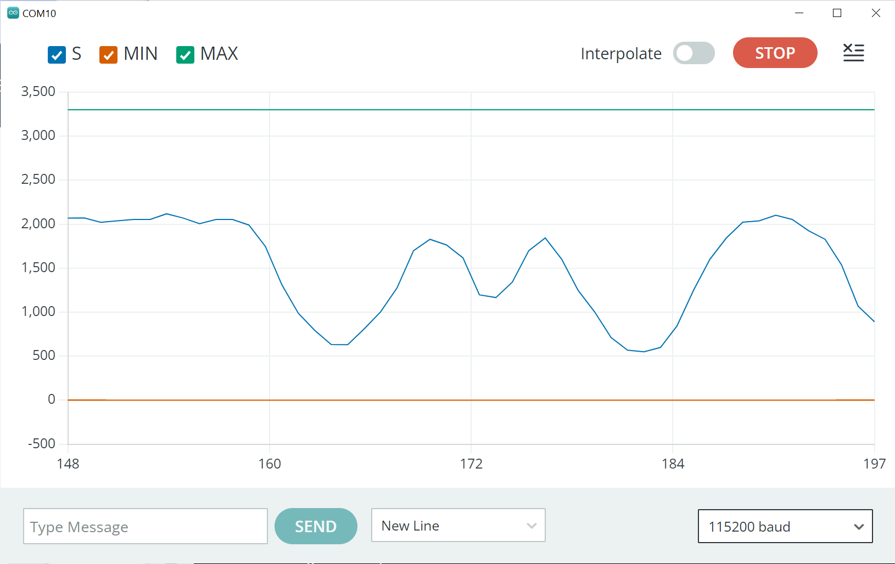
รูป: ตัวอย่างการแสดงข้อมูลที่ได้รับใน Arduino Serial Plotter เมื่ออ่านค่าสัญญาณแอนะล็อกจากโมดูลเซนเซอร์แสง
▷ โค้ดตัวอย่างที่ 9: การอ่านค่าสัญญาณแอนะล็อกด้วยอัตราคงที่โดยใช้ ADC และ Timer#
ตัวอย่างโค้ดถัดไปเป็นการเขียนโค้ดเพื่ออ่านค่าสัญญาณอินพุตแบบแอนะล็อก โดยใช้หนึ่งช่องสัญญาณอินพุต ของวงจร ADC (Analog-to-Digital Converter) ภายในชิป ESP32C6 (เลือกใช้ขา ADC1_CH4 / GPIO4)
การอ่านค่าอินพุต จะใช้วงจร Hardware Timer เป็นตัวกำหนดอัตราการอ่านให้คงที่ โดยกำหนดไว้ 10000Hz ค่าที่อ่านได้ในแต่ละครั้งจะได้ค่าเป็นเลขจำนวนเต็มหน่วยเป็นมิลลิโวลต์ ไม่เกิน 3300mV และจะบันทึกข้อมูลลงในอาร์เรย์ขนาด 1024 เมื่อได้ข้อมูลครบแล้ว จะส่งข้อมูลออกทาง Serial (ตั้งค่า Baudrate 921600) เป็นข้อความ หนึ่งค่าตัวเลขต่อหนึ่งบรรทัด ไปยังคอมพิวเตอร์ แล้วเริ่มต้นขั้นตอนซ้ำใหม่ในรอบถัดไป
const int ADC_PIN = 4; // ADC1_CH4 / GPIO4 pin
bool sampling = true;
uint32_t sample_index = 0;
const uint32_t Fs = 10000; // Sampling frequency (Hz)
const uint32_t N = 1024; // Number of samples
uint32_t sample_count = 0;
uint16_t samples[N];
TaskHandle_t mainTaskHandle = NULL;
void notifyTask() {
BaseType_t xHigherPriorityTaskWoken = pdFALSE;
// Notify the main task.
vTaskNotifyGiveFromISR(mainTaskHandle, &xHigherPriorityTaskWoken);
if (xHigherPriorityTaskWoken == pdTRUE) {
portYIELD_FROM_ISR();
}
}
//----------------------------------------------------------------
// Callback function of the hardware timer.
void IRAM_ATTR timer_callback() {
if (!sampling)
return;
// Read the ADC input channel.
uint16_t value = (uint16_t)analogReadMilliVolts( ADC_PIN );
samples[sample_count++] = value;
if ( sample_count == N ) {
sampling = false; // Pause the ADC reading.
sample_count = 0; // Reset the sample count.
notifyTask(); // Notify the main task.
}
}
// Initialize the ADC input channel.
void initADC() {
// Set ADC resolution to 12 bits
analogReadResolution( 12 );
// Set attenuation level to 11 dB.
analogSetPinAttenuation( ADC_PIN, ADC_11db );
}
// Initialize the hardware timer.
void initTimer( uint32_t hw_timer_unit=0 ) {
static hw_timer_t *timer = NULL;
timer = timerBegin( 1000000UL ); // 1MHz (1us tick)
timerWrite(timer, 0);
// Attach the callback function (ISR) to the timer
timerAttachInterrupt( timer, &timer_callback );
timerAlarm(timer, (1000000UL/Fs) /*interval*/,
true /*reload*/, 0 /*reload value*/);
timerRestart(timer);
}
void setup() {
Serial.begin(921600);
Serial.setTxBufferSize(256);
Serial.flush();
// Get the handle of the main task.
mainTaskHandle = xTaskGetCurrentTaskHandle();
initADC(); // Initialize the ADC.
initTimer(); // Initialize the hardware timer.
}
void loop() {
if ( ulTaskNotifyTake(pdTRUE,pdMS_TO_TICKS(5))==pdTRUE) {
for ( uint32_t i=0; i < N; i++ ) {
// Send the sample as a string to serial.
Serial.printf("S:%u,MIN:0,MAX:3300\n", samples[i]);
}
Serial.flush();
sampling = true;
}
}
สัญญาณอินพุตแบบแอนะล็อก อาจได้จากเครื่องกำเนิดสัญญาณ (Function Generator) หรือโมดูลเซนเซอร์ที่ให้เอาต์พุตเป็นสัญญาณแอนะล็อก เช่น โมดูลไมโครโฟนขยายเสียง MAX4466 หรือ MAX9814
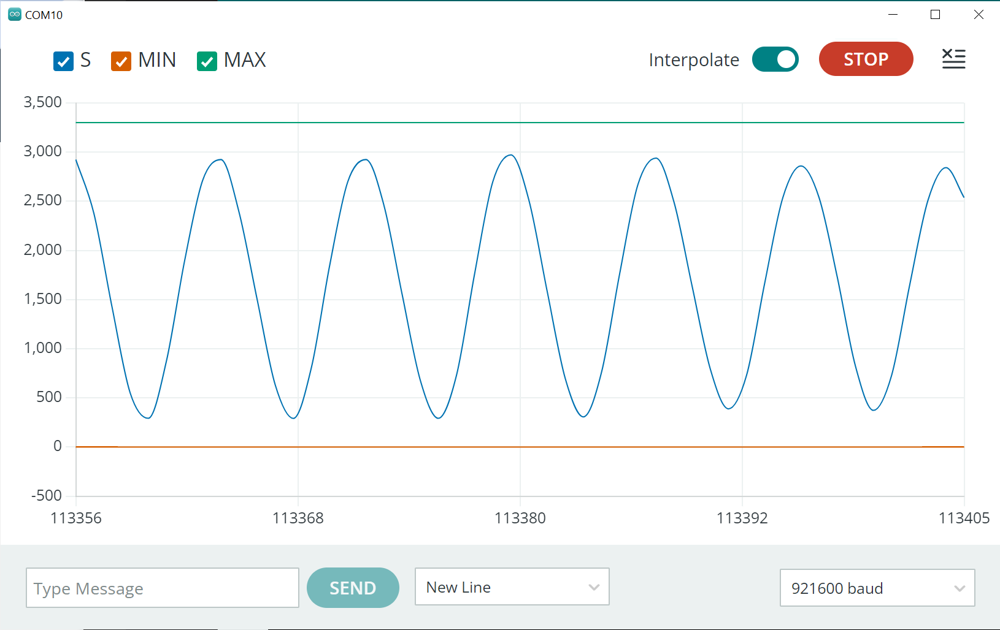
รูป: ตัวอย่างการแสดงข้อมูลที่ได้รับใน Arduino Serial Plotter เมื่ออ่านค่าสัญญาณแอนะล็อกจากโมดูลไมโครโฟนขยายเสียง
▷ กล่าวสรุป#
บทความนี้ได้นำเสนอการใช้งานบอร์ดไมโครคอนโทรลเลอร์ ESP32-C6 และตัวอย่างการเขียนโค้ดด้วย Arduino Sketch และใช้ Arduino-ESP32 Core v3.0.0 เพื่อทดสอบการทำงานของฮาร์ดแวร์และซอฟต์แวร์ในเบื้องต้น
บทความที่เกี่ยวข้อง
This work is licensed under a Creative Commons Attribution-ShareAlike 4.0 International License.
Created: 2023-11-18 | Last Updated: 2023-11-20